Half the tim

. Twice the fit.Time-to-source is the metric that matters: how quickly a qualified candidate reaches your active pipeline once a requisition opens. Industry benchmarks lag. Ours lead.
Every search
starts with you.
Then w go to work.
go to work.
Four phases, starting with the discovery call. What we hear there shapes everything that follows — so the search is calibrated to your business from day one, and the back end moves fast.
Deep intake and market mapping.
We immerse in the business, the team, the role, and the bar. By the kickoff call we already have a market read — comp data, competitor pipelines, where the talent lives.
- Stakeholder & technical alignment
- Comp + market intelligence
- Competitor & talent landscape map
Precise calibration.
A small batch of qualified “on paper” profiles is shared early — not to interview, but to align. Your feedback sharpens the bar before a single outreach goes out.
- Calibration batch within days of kickoff
- Structured signal & feedback loop
- Bar locked before active sourcing
AI-accelerated discovery, human-curated shortlist.
Artificial Intelligence compresses the discovery and outreach loop. Humans run every conversation, every read, every recommendation. The shortlist is small, sharp, and personal.
- Surface qualified candidates in ≤7 days
- Personalised outreach & first reads
- Calibrated shortlist — not a longlist
Momentum from offer to onboarded.
We stay close through close — managing motivations, comp, counter-offers, and start-date logistics. The relationship doesn't end at signature; it's where it starts.
- Offer strategy & close support
- Weekly partner cadence
- Long-term advisory across roles
Four ways to
ngage.
Each engagement is shaped to your stage, urgency, and team, not a fixed template. Pick the model that fits, or we will help you decide on the call.
Dedicated, in-depth search for specialized and senior individual-contributor roles where fit, depth, and speed all matter.
Confidential, partner-led searches for C-suite, VP, and director-level leaders — including head-of-function and first-in-seat hires.
Calibrated pipeline straight to your inbox. We find and qualify; your team runs interviews and closes.
Strategic counsel for talent leaders — comp benchmarking, market mapping, org design, hiring strategy, and pipeline architecture.
Tech-specific.
Globally ntworked.
A decade-deep network across engineering, Machine Learning and Artificial Intelligence (ML/AI), product, research and GoToMarket (GTM) leadership, for companies from Seed to Enterprise.